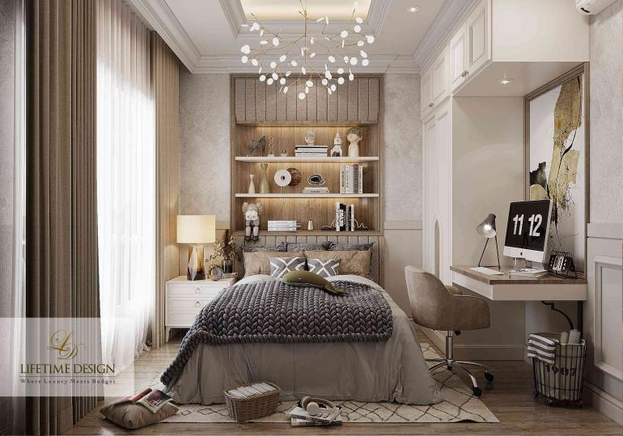
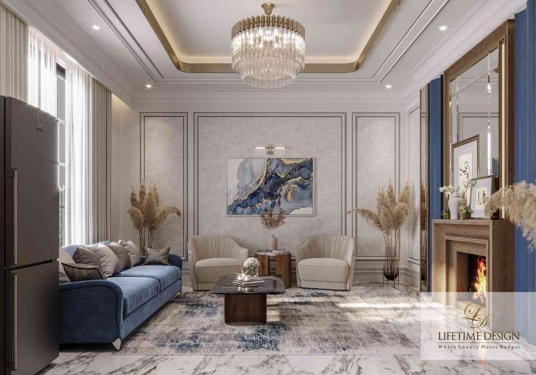
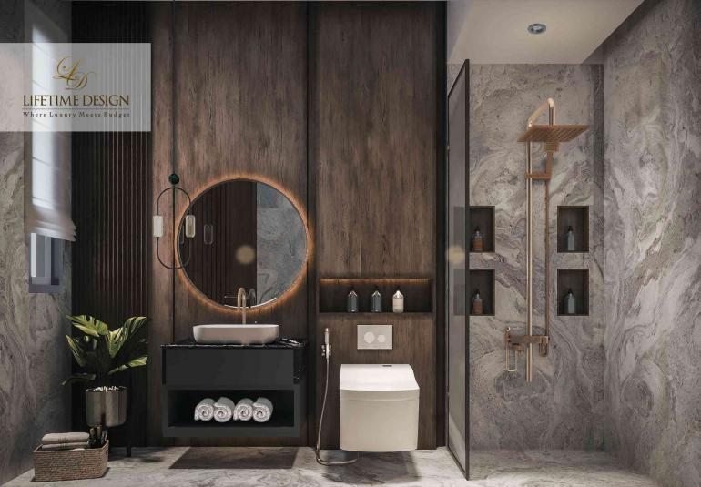

3 Tips Menghadirkan Kenyamanan di Rumah Mewah Anda!
Rumah dapat menjadi sebuah suaka yang menawarkan kenyamanan tak terhingga. Maka dari itu, tidak heran rasanya jika banyak masyarakat yang rela merogoh kocek cukup dalam untuk menghadirkan desain rumah yang maksimal sekaligus meningkatkan kenyamanan di dalamnya.
Kenyamanan dapat diciptakan lewat banyak cara. Misalnya, selalu memperhatikan kebersihan, kerapihan, bahkan keamanannya. Namun selain itu, dari segi desain interior, hal apalagi yang dapat Anda hadirkan untuk meningkatkan kenyamanan di rumah? Jika masih bingung, mari simak ulasan dari Lifetime Design berikut ini!
1. Aplikasi warna coklat
Secara psikologis, warna coklat dapat memberikan kesan hangat dan tenang. Namun jangan salah, Anda juga tidak boleh mengaplikasikan warna coklat yang terlalu dominan agar tampilannya tidak kaku. Agar tampilan warna coklat di rumah bisa maksimal memberikan ketenangan, Anda dapat mengaplikasikan warna coklat soft yang dikombinasikan dengan warna-warna netral lainnya. Selain itu, Anda juga dapat menghadirkan warna coklat yang lebih bold hanya sebagai aksen semata.
2. Gunakan pencahayaan Warm
Pencahayaan menjadi salah satu elemen penting untuk menghadirkan kenyamanan di rumah. Untuk pencahayaan alami, Anda dapat menghadirkan beberapa jendela dan juga bukaan di rumah. Namun untuk pencahayaan buatan, Anda dapat memilih warna lampu yang lebih warm. Dengan penempatan lampu yang tepat serta pemilihan warna tersebut dapat membuat kesan di ruangan menjadi lebih nyaman.
3. Hadirkan sentuhan Alam
Agar kenyamanan di rumah dapat lebih maksimal, Anda juga dapat menghadirkan beberapa sentuhan alam lewat material maupun dekorasi yang digunakan. Misalnya, penggunaan material kayu, rotan, ataupun menempatkan beberapa tanaman hijau di dalam rumah. Aplikasi material serta sentuhan alam tersebut tidak hanya dapat membuat rumah terasa nyaman tetapi juga lebih sejuk.
